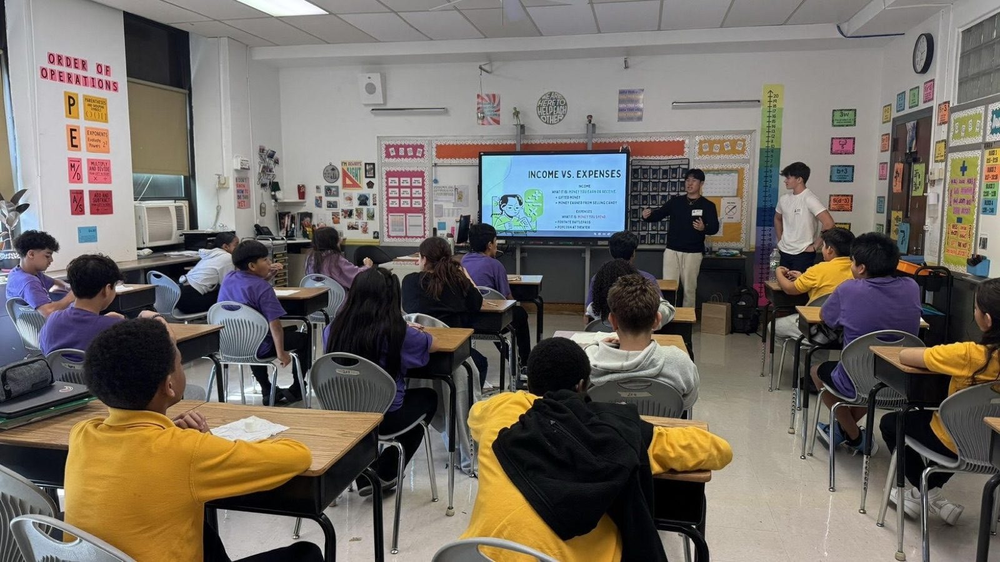

Every chapter still starts the same way ours did: a small group of students who decide their peers deserve better than silence around money.
Our Story
How Futures Financials began
A kitchen table, a handful of empty chairs, and one student who refused to stop asking questions.
"Even from a worn kitchen table, you can still move forward."
Danny Jang, Founder & Executive Chairman
Where It Started
A kitchen table beginning
Danny Jang grew up in a household where money was never simple. His parents ran a small sushi shop in New Jersey, and when the pandemic hit, business slowed and never fully recovered. Most weeknights, Danny helped out after school: washing produce, packing orders, calling suppliers, and translating invoices, tax notices, and bills for his parents in both Korean and English.
He watched his mother line up receipts at the kitchen table late at night, trying to make the numbers work. That experience taught him something school never did: understanding money is not a luxury, it is survival. He started emailing behavioral economics professors, one after another, until a Rutgers lecturer finally wrote back and told him to keep going.

The First Workshop
Three empty chairs
In 2022, Danny founded Futures Financials with a simple idea: teach students the money lessons he had to learn the hard way, before they needed them. The very first workshop drew three students. Danny stood in front of the empty chairs that night and wondered if he had built something nobody needed.
He rewrote the lesson anyway, and slowly, word spread. After one session, a father waited outside, arms crossed, and asked what a student could possibly know about real debt. Danny told him the truth: he didn't know that family's bills, but he knew what it felt like to watch his own parents worry and not know how to help. The two of them sketched out a savings plan together that day. That conversation became the model for how Futures Financials still teaches: not lecturing at students, but sitting down next to them.
Where We Stand Today
A movement, not a moment
What began with three chairs has grown into 18 chapters across 7 countries, powered by more than 450 student volunteers who have taught over 10,000 students the fundamentals of budgeting, saving, credit, and investing. Futures Financials led New Jersey's first-ever student-run Teen Teach-In, partnered with organizations like Google Health, FinMango, Rutgers, NGPF, and the Jump$tart Coalition, and was honored with the Global Recognition Award in both 2025 and 2026. Danny himself was named a FinMango Global Ambassador, the youngest ever selected, and recognized as one of the first two high school students in the world to receive the Money Awareness and Inclusion Awards' Best Educator honor.
Every lesson still gets rewritten based on who shows up, because financial literacy only works when students see themselves in it.
Every skeptical parent is still a chance to prove that a student with the right knowledge can be trusted with something that matters.
The next chapter is still being written
Futures Financials started with three empty chairs. Today it is a global, student-led movement, and it is still growing. Join us, whether that means volunteering, starting a chapter, or simply learning more about where we came from.